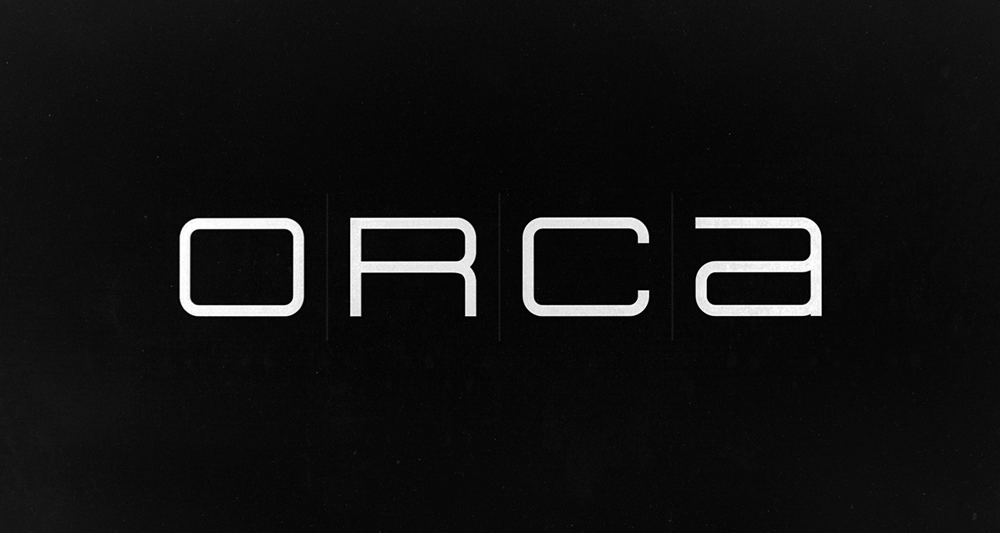
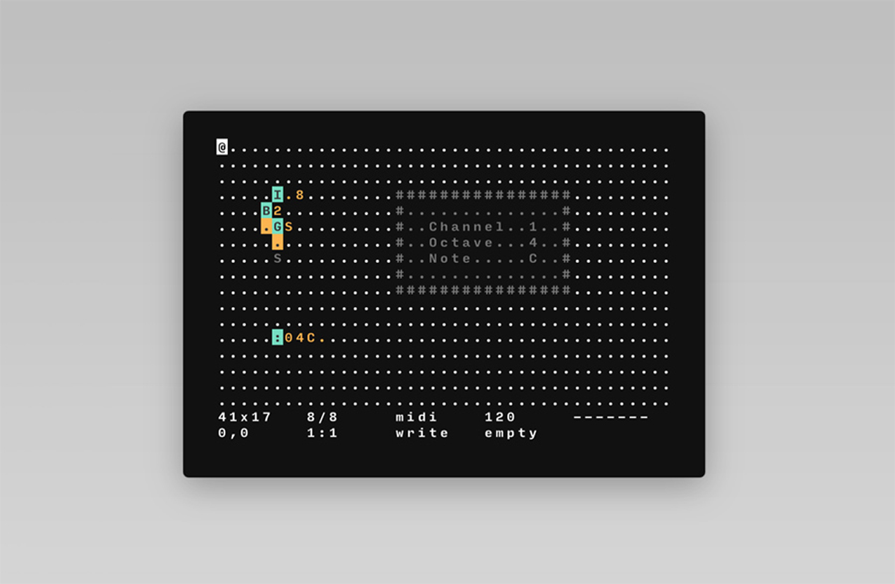

Orca
Introduction
Orca is a visual programming playground.
The Orca environment is designed to create procedural MIDI/UDP/OSC sequencers on the fly, and to control other applications.
Download
You can view the sources, or download builds for OSX, Windows and Linux here:
Tutorial
Orca is not a synth, but a livecoding environment to write procedural sequencers. In other words, Orca is meant to control other applications such as a DAW (Ableton, Renoise, VCV Rack, etc.), or an audio server such as SuperCollider.
Each letter of the alphabet is an operation, lowercase letters operate on bang(*), uppercase letters operate each frame. Bangs can be generated by various operations, such as E colliding with a 0, see the bang.orca example.
See some projects created with ORCΛ, or watch an introduction video.
Visual

You can change the look and colour of Orca. To do this, download themes from our itch.io page. You can view the colour palettes of each theme in the preview, once you find something you like, drag the file (.svg file) onto Orca. The colours will change instantly.
These themes are part of the Ecosystem Theme, which means that you can apply a theme to any supported app (Left, Donsol, Pico and Marabu).
You can also create your own themes.
Extras
This application supports the Ecosystem Theme. See the License file for license rights and limitations (MIT). Pull Requests are welcome!